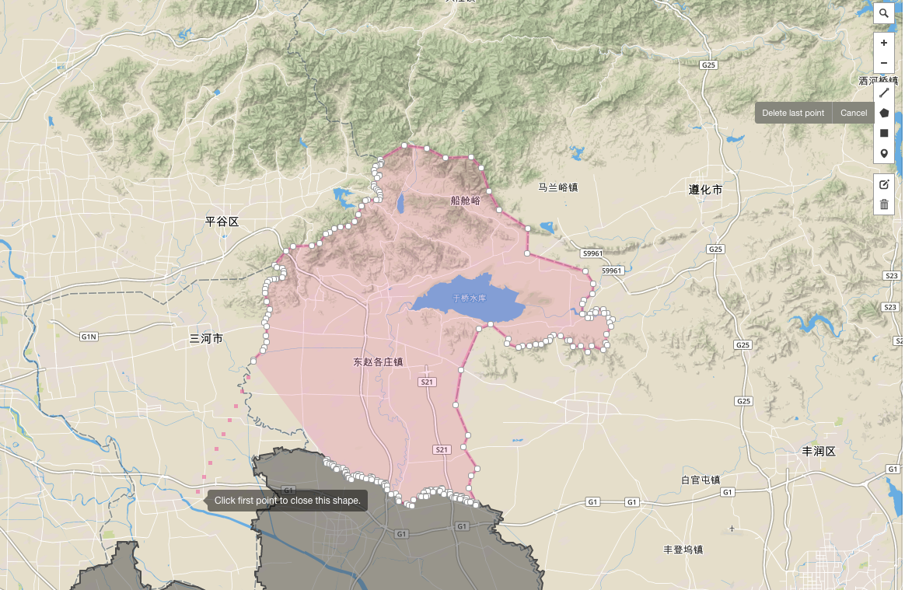

给天津市补上蓟洲区
蓟洲区的前身是蓟县，2016年6月，成为天津市蓟州区。
简要操作顺序
- 从这里下载天津市区地图并存为 tianjin.geojson
-
用浏览器打开 geojson.io，把下载的地图拽入浏览器。

-
按照前面百度百科的蓟洲区地图，在浏览器里开始画 Polygon
千万记住最后一个点，必须是第一个起始点。 
-
编辑完毕之后，新画的区留下了。辅助区消失了。请把右边的 geojson 给存成文件：jizhouqu.geojson

-
这个时候就需要 echarts-mapmaker 了。
$ npm install -g echarts-mapmaker $ merge tianjin.geojson jizhouqu.geojson $ ls merged_tianjin.geojson -
merged_tianjin.geojson就是最后制定好的新的天津市市区图
做一个 js 文件
这个需要 echarts-mapmaker.
$ makejs tianjin.geojson tianjin.js 天津
请注意，最后一个变量名天津，很重要。在 echarts 里调用的时候，就用 天津。